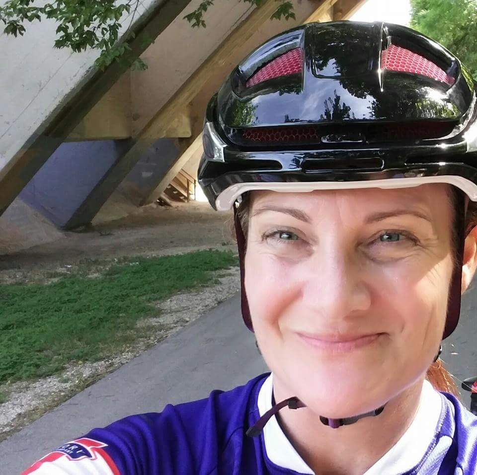

About Me
I am a mother, a friend, a designer of rooms, a designer of websites. I love adventure and romance. Just Do It is my motto. Where there's a will, there's a way is my strength. I am a passionate person who sees the good in everyone.
I get motivation from my children. Their courage reminds me to be a better person today than I was yesterday. I cycle long distances and fall asleep during long movies.
I'm a go-getter who has a passion for crafting visually compelling stories chock-full of universal truths. My expertise in navigating clashes between the creative opinions of directors, clients and co-workers makes me invaluable. I'm a big-picture thinker who seamlessly blends creativity with sound strategy. I brainstorm. I enlighten. I enroll. I elevate my team members instead of tearing them down. I know when to stand my ground and when to back off. I wear many hats, herd many cats and lead my team toward strategic, out-of-the-box solutions.
Connect With Me